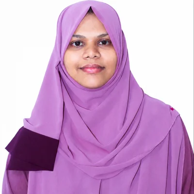
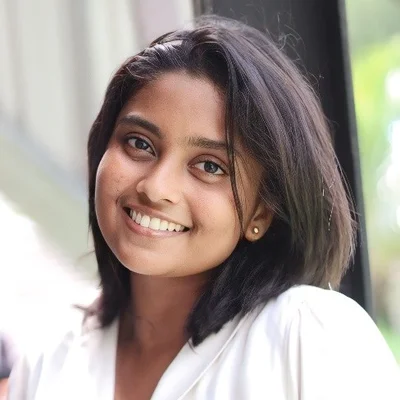

Meet the research group and supervisors behind Bhasha.
We are a four-member final-year research group from the Department of Computer Science, Sri Lanka Institute of Information Technology (SLIIT), following the B.Sc. (Hons) in Information Technology Specialized in Data Science. We set out to help Sinhala- and Tamil-speaking children who fall behind in reading and writing, by giving teachers and parents an automated, child-friendly way to monitor early literacy.
Department of Computer Science, Sri Lanka Institute of Information Technology (SLIIT)

Department of Computer Science, Sri Lanka Institute of Information Technology (SLIIT)
Each member leads one research component of Bhasha.

Fine-tuned TrOCR for children's Sinhala and Tamil handwriting and built the hybrid spelling module and Gemini-based grammar correction with child-friendly explanations.
Developed teacher-trained, explainable handwriting-quality models for Sinhala and Tamil that detect writing issues and give personalised improvement suggestions.
Fine-tuned language-specific Whisper models to transcribe children's oral reading and identify reading errors, accuracy and reading behaviour.
Built Whisper-based reading analysis, Random Forest learner profiling and a recommendation engine for targeted reading practice.